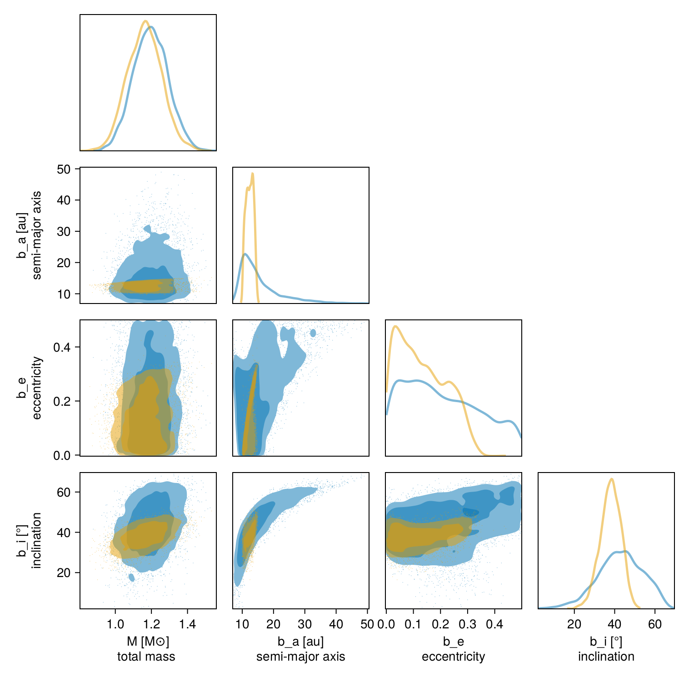

Observale-Based Priors
This tutorial shows how to fit an orbit to relative astrometry using the observable-based priors ofO'Neil et al. 2019. Please cite that paper if you use this functionality.
We will fit the same astrometry as in the previous tutorial, and just change our priors.
using Octofitter
using CairoMakie
using PairPlots
using Distributions
astrom_like = PlanetRelAstromLikelihood(
(epoch = 50000, ra = -505.7637580573554, dec = -66.92982418533026, σ_ra = 10, σ_dec = 10, cor=0),
(epoch = 50120, ra = -502.570356287689, dec = -37.47217527025044, σ_ra = 10, σ_dec = 10, cor=0),
(epoch = 50240, ra = -498.2089148883798, dec = -7.927548139010479, σ_ra = 10, σ_dec = 10, cor=0),
(epoch = 50360, ra = -492.67768482682357, dec = 21.63557115669823, σ_ra = 10, σ_dec = 10, cor=0),
(epoch = 50480, ra = -485.9770335870402, dec = 51.147204404903704, σ_ra = 10, σ_dec = 10, cor=0),
(epoch = 50600, ra = -478.1095526888573, dec = 80.53589069730698, σ_ra = 10, σ_dec = 10, cor=0),
(epoch = 50720, ra = -469.0801731788123, dec = 109.72870493064629, σ_ra = 10, σ_dec = 10, cor=0),
(epoch = 50840, ra = -458.89628893460525, dec = 138.65128697876773, σ_ra = 10, σ_dec = 10, cor=0),
)
@planet b Visual{KepOrbit} begin
e ~ Uniform(0.0, 0.5)
i ~ Sine()
ω ~ UniformCircular()
Ω ~ UniformCircular()
# Results will be sensitive to the prior on period
P ~ LogUniform(0.1, 50)
a = ∛(system.M * b.P^2)
θ ~ UniformCircular()
tp = θ_at_epoch_to_tperi(system,b,50420)
end astrom_like ObsPriorAstromONeil2019(astrom_like)
@system TutoriaPrime begin
M ~ truncated(Normal(1.2, 0.1), lower=0)
plx ~ truncated(Normal(50.0, 0.02), lower=0)
end b
model = Octofitter.LogDensityModel(TutoriaPrime)LogDensityModel for System TutoriaPrime of dimension 11 with fields .ℓπcallback and .∇ℓπcallback
Now run the fit:
using Random
Random.seed!(0)
results_obspri = octofit(model,iterations=5000,)Chains MCMC chain (5000×29×1 Array{Float64, 3}):
Iterations = 1:1:5000
Number of chains = 1
Samples per chain = 5000
Wall duration = 20.96 seconds
Compute duration = 20.96 seconds
parameters = M, plx, b_e, b_i, b_ωy, b_ωx, b_Ωy, b_Ωx, b_P, b_θy, b_θx, b_ω, b_Ω, b_a, b_θ, b_tp
internals = n_steps, is_accept, acceptance_rate, hamiltonian_energy, hamiltonian_energy_error, max_hamiltonian_energy_error, tree_depth, numerical_error, step_size, nom_step_size, is_adapt, loglike, logpost, tree_depth, numerical_error
Summary Statistics
parameters mean std mcse ess_bulk ess_tail ⋯
Symbol Float64 Float64 Float64 Float64 Float64 Flo ⋯
M 1.1627 0.0951 0.0018 2873.6654 2915.2597 1. ⋯
plx 49.9998 0.0195 0.0003 5539.9577 3064.4914 1. ⋯
b_e 0.1325 0.0890 0.0029 922.2287 1686.9803 1. ⋯
b_i 0.6619 0.0902 0.0019 2464.9375 2612.6159 1. ⋯
b_ωy 0.7465 0.2906 0.0127 656.4081 839.0013 1. ⋯
b_ωx 0.5020 0.3271 0.0148 533.7169 698.6309 1. ⋯
b_Ωy -0.4080 0.3184 0.0139 562.2837 1061.7371 1. ⋯
b_Ωx -0.8279 0.2193 0.0101 645.5783 1214.2755 1. ⋯
b_P 40.6512 5.7876 0.1675 1106.6956 1427.4643 1. ⋯
b_θy 0.0742 0.0073 0.0001 5786.3310 3486.9553 0. ⋯
b_θx -0.9977 0.0197 0.0003 4995.5107 3352.9950 1. ⋯
b_ω 0.5911 0.4725 0.0223 521.4073 701.9232 1. ⋯
b_Ω -2.0354 0.3996 0.0180 560.8377 1208.2051 1. ⋯
b_a 12.3879 1.1776 0.0323 1280.7629 1709.5909 1. ⋯
b_θ -1.4965 0.0073 0.0001 6113.8560 3726.7032 0. ⋯
b_tp 43133.3765 7220.2474 124.7371 2842.2923 2933.5936 1. ⋯
2 columns omitted
Quantiles
parameters 2.5% 25.0% 50.0% 75.0% 97.5%
Symbol Float64 Float64 Float64 Float64 Float64
M 0.9829 1.0957 1.1634 1.2257 1.3523
plx 49.9615 49.9865 50.0000 50.0130 50.0371
b_e 0.0057 0.0543 0.1200 0.2041 0.3026
b_i 0.4749 0.6046 0.6660 0.7259 0.8247
b_ωy 0.0426 0.6039 0.8775 0.9558 1.0126
b_ωx -0.0957 0.2768 0.4655 0.7898 0.9988
b_Ωy -0.9543 -0.7008 -0.3217 -0.1506 0.0578
b_Ωx -1.0245 -0.9837 -0.9427 -0.7150 -0.3024
b_P 30.0871 35.9266 40.9452 45.6797 49.6549
b_θy 0.0600 0.0693 0.0742 0.0793 0.0891
b_θx -1.0357 -1.0109 -0.9978 -0.9845 -0.9595
b_ω -0.0952 0.2798 0.4859 0.9091 1.5044
b_Ω -2.8328 -2.3421 -1.8971 -1.7218 -1.5139
b_a 10.3227 11.4338 12.4255 13.3512 14.4070
b_θ -1.5104 -1.5016 -1.4966 -1.4915 -1.4822
b_tp 32702.0358 35946.8880 48317.0335 50207.1136 50403.3577
using Plots: Plots
plotchains(results_obspri, :b, kind=:astrometry, color="b_e")
Plots.plot!(astrom_like, label="astrometry")
Plots.xlims!(-1000,1000)
Plots.ylims!(-1000,1000)
Compare this with the previous fit using uniform priors:
plotchains(results, :b, kind=:astrometry, color="b_e")
Plots.plot!(astrom_like, label="astrometry")
Plots.xlims!(-1000,1000)
Plots.ylims!(-1000,1000)
We can compare the results in a corner plot:
octocorner(model,results,results_obspri,small=true)